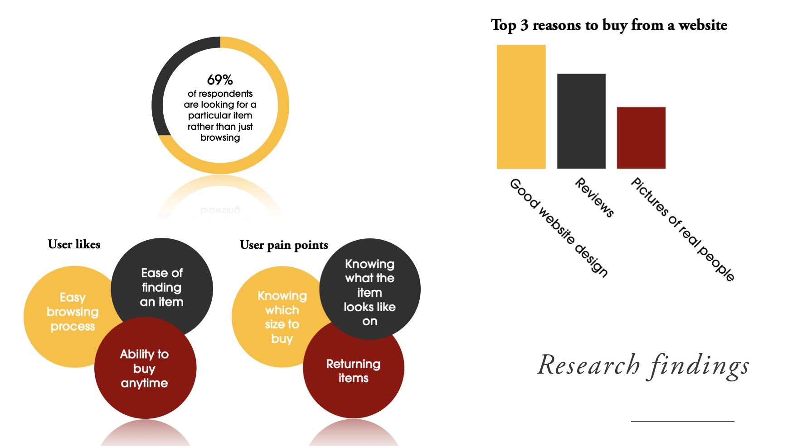

UX Designer
Sketch
InVision
3 weeks
May 2019
2 UX Designers
1 UI Designers
Cocorose aims to to make it easy for the modern working woman to buy shoes that are stylish and are comfortable, so they are able to get on with their busy lives. To do this, Cocorose are planning to make the move from being predominently wholesale based to an e-commerce business.
To make this move, Cocorose engaged with us to redesign their site with the goals to:
1. Review and evolve the brand identity and tone of voice
2. Ensure users can find the products easily with an intuitive UX
3. Improve the site layout so that it is easy for the modern working woman to buy shoes they love quickly

The aim of the research was to find out what Cocorose’s target market wanted from an e-commerce website, and how the current website was, and was not meeting these needs. We did this by conducting an online survey to reach a large audience, in-person interviews and usability tests on the current Cocorose site.
We then created an affinity diagram to draw out the key findings from our research. Below are the key findings:
Based on our research, we found our main user was the ‘career woman’. We created a user persona for her shown below:

We created a story board to portray the story of this user.

From our research we knew a key part of this project was to work on the information architecture and improve the site layout. We therefore spent may hours working on the site map to ensure we included all the important information and told the brand story, while keeping clutter to a minimum. Below shows the site map of the current website alongside our proposed site map.

The design process started with a ‘crazy 8s’ exercise with the whole team. We all created 8 sketches of the homepage in 8 minutes. We compiled our ideas together to sketch up the homepage, and used this as a base to start sketching up the other pages. We created digital wireframes which we tested, iterated and tested again. Below you can see an example of the changes we made to the homepage due to testing.

The biggest challenge with this project was maintaining the personality of the brand while also not letting it take over the user experience when purchasing shoes. Cocorose is a family business and users really connect with the personal story of Cocorose, so we wanted to let that shine in the website design. However, by reducing the amount of noise and simplifying the site plan, we also allowed users to simply and easily buy shoes quickly so they could get on with their busy lives.
Lessons learnt
This project taught me the importance of information hierachy, and what a difference it can make for the user experience. While the current Cocorose website has everything that users could want in a website, due to the structure is wasn’t serving the user’s needs and providing them with the shopping experience they were looking for. It is actually much harder than we first thought to get the information hierachy right, and involved a lot of iterations.
This case study is meant to give you a quick overview of how I approached the challenge. If you would like to read a more in depth case study you can do just that on Medium here:
Read more.png)